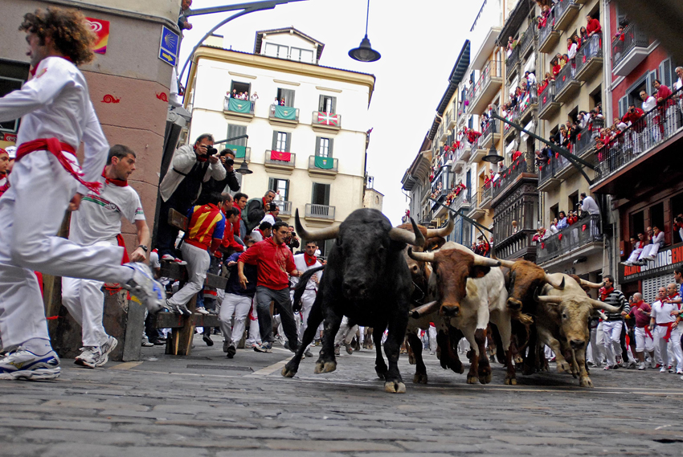
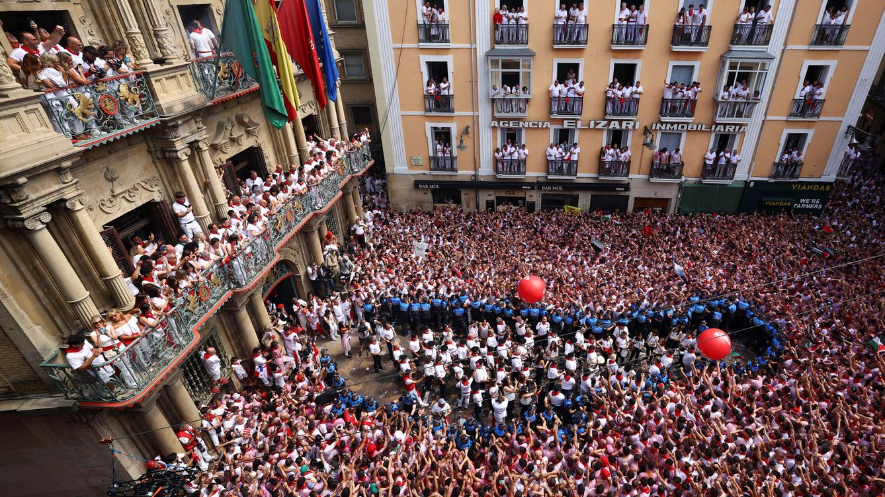
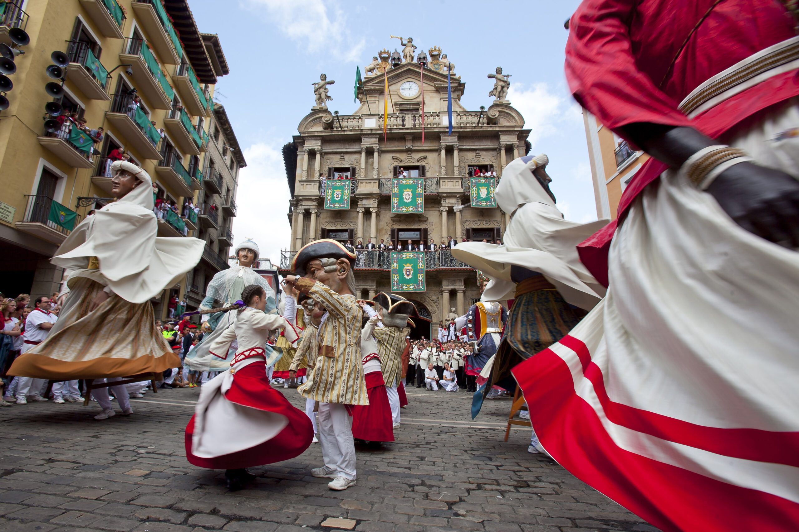
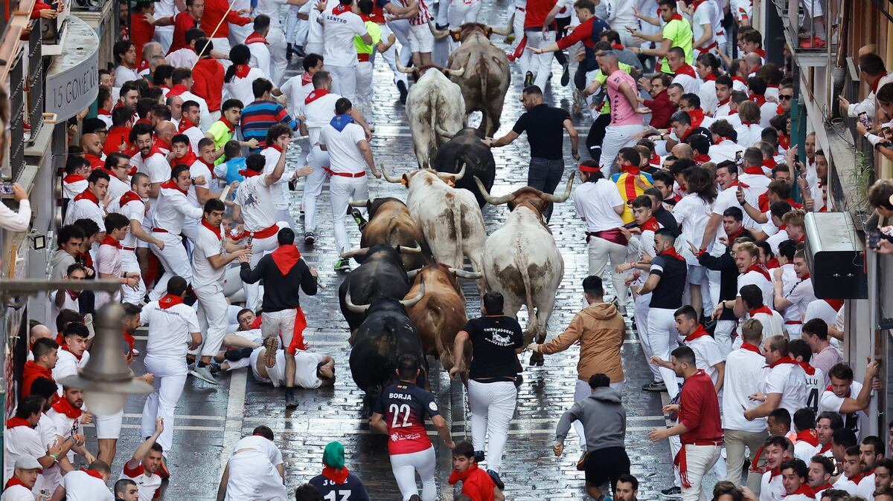

Fiestas de San Fermín de Pamplona
Pamplona · Fiesta patronal · "Del blanco y rojo a la devoción."
- Respeta los ritos, trajes y momentos sagrados. No conviertas las prácticas religiosas en espectáculo.
- No participes en los encierros si no conoces el protocolo; sigue siempre las indicaciones de protección civil.
- Solicita permiso antes de publicar fotos de personas identificables.
La esencia de la fiesta
Los Sanfermines de Pamplona son una explosión de alegría y tradición que cada año transforma la ciudad en un epicentro internacional de emociones, cultura y fraternidad. Tanto visitantes como locales viven una experiencia vibrante, marcada por el rojo y el blanco, los cánticos, los encierros y una energía que permanece en la memoria para siempre.
¿En qué consiste?
Las fiestas de San Fermín, del 6 al 14 de julio, son una celebración popular y religiosa que transforma Pamplona en un gran encuentro de gente de todo el mundo. Arrancan con el Chupinazo, el cohete lanzado desde el Ayuntamiento, y se suceden jornadas de ambiente continuo: encierros matinales donde toros y corredores recorren el casco histórico, desfiles de Gigantes y Cabezudos, actuaciones de txarangas y conciertos nocturnos. Las peñas y cuadrillas animan las calles con pintxos y tradiciones, y la gastronomía, con el zurracapote y la chistorra como protagonistas, es parte esencial de la experiencia. Cada jornada suele acabar con fuegos artificiales o conciertos, y la semana termina con el emotivo "Pobre de mí", que cierra la fiesta con una mezcla de nostalgia y emoción colectiva.
Historia y significado
La historia de los Sanfermines se remonta al siglo XII, cuando Pamplona comenzó a celebrar actos religiosos en honor a San Fermín, considerado primer obispo de Pamplona y copatrón de Navarra junto a San Francisco Javier. En 1591 se fusionaron las celebraciones religiosas con ferias comerciales y corridas de toros, dando origen a la estructura actual de la fiesta. El traslado de las reliquias de San Fermín desde Amiens en 1186 consolidó su culto popular y el sentido de devoción con el que hoy se vive la festividad.
Fechas y calendario
Los Sanfermines se celebran cada año del 6 al 14 de julio. El chupinazo del día 6 a mediodía marca el inicio oficial, y el "Pobre de mí" del día 14 a medianoche cierra la fiesta. Cada jornada está repleta de actividades desde la mañana hasta la madrugada, con más de 500 actos organizados por toda la ciudad.
Actos destacados
- Chupinazo: lanzamiento del cohete desde el Ayuntamiento (6 de julio, 12:00).
- Encierros: recorrido de los toros por el casco antiguo seguido de corridas en la plaza (7 al 14 de julio, 08:00).
- Procesión y misa mayor en honor a San Fermín: acto central de devoción religiosa (7 de julio).
- Comparsa de Gigantes y Cabezudos: desfile tradicional, especialmente recomendable para familias (cada mañana).
- Fuegos artificiales: concurso internacional desde la Ciudadela (cada noche, 23:00).
- Conciertos en la Plaza del Castillo: actuaciones diarias para todos los gustos.
- "Pobre de mí": despedida y cierre oficial de las fiestas (14 de julio, medianoche).
Música y sonido
La música es el alma sonora de los Sanfermines. La Pamplonesa, banda municipal oficial, abre cada día con las dianas a las 6:45, recorriendo el Casco Viejo y despertando a la ciudad, y cierra la fiesta con el emotivo "Pobre de mí". Las charangas y las bandas de las peñas animan el ambiente con metales, bombos y pasodobles que invitan a la fiesta sin parar.
Desde la madrugada con dianas de txistus y gaiteros hasta la noche con pasacalles y conciertos, suenan piezas como "Uno de Enero", "Riau-Riau", "A San Fermín Pedimos", "Quinto Levanta" y el Vals de los Gigantes.
- Las dianas se disfrutan especialmente en la Plaza Consistorial, para sentir la tradición desde primera fila.
- La zona de Jarauta y San Nicolás es el epicentro de charangas por la noche, mejor a partir de las 22:00.
- Respeta el paso de las bandas y evita interrumpir los pasacalles.
No te lo puedes perder
- Ver un encierro desde una buena ubicación elevada, aunque sea de espectador.
- La comparsa de Gigantes y Cabezudos, especialmente recomendable para familias.
- Probar pintxos y participar en almuerzos y meriendas con cuadrilla.
- Los fuegos artificiales desde la Ciudadela.
- El "Pobre de mí" final: uno de los momentos más emotivos de cualquier fiesta española.
Peñas participantes
Las peñas son el motor social de los Sanfermines: agrupaciones de amigos que organizan actividades propias y tienen una presencia destacada en todos los actos.
- Peña Anaitasuna
- Peña Armonía Txantreana
- Peña Irrintzi
- Peña La Única (la más antigua)
- Peña Oberena
- Peña Mutilzarra
- Peña Muthiko Alaiak
- Peña Rotxapea
- Peña Sanduzelai
- Peña El Bullicio
- Peña La Jarana
Fuente: Ayuntamiento de Pamplona — última verificación: 2025-02-01
Consejos prácticos
- Llega con antelación al chupinazo si quieres un buen sitio en la Plaza del Ayuntamiento.
- Lleva ropa blanca y pañuelo rojo, cómodos para moverse todo el día.
- No participes en los encierros sin conocer el protocolo y las normativas de seguridad.
- Consulta el programa actualizado en la web del Ayuntamiento, ya que los horarios pueden variar.
Vocabulario festero
- Chupinazo
- Cohete que marca el inicio oficial de las fiestas el 6 de julio desde el balcón del Ayuntamiento.
- Encierro
- Carrera en la que los toros recorren las calles del casco antiguo hasta la plaza de toros, acompañados por corredores.
- Peña
- Grupo o asociación de personas que se reúnen para participar y disfrutar juntos de las fiestas, con actividades propias.
- Txaranga
- Banda de música ambulante que toca marchas y canciones populares animando el recorrido y los eventos callejeros.
- Zurracapote
- Bebida tradicional hecha con vino tinto macerado con frutas y especias, muy popular durante las fiestas.
- Pobre de mí
- Canción y acto que cierra oficialmente los Sanfermines a medianoche del 14 de julio, con los festeros portando velas.
Galería




Enlaces útiles
Última verificación de enlaces: 2025-02-01
Preguntas frecuentes
- ¿Cuándo se celebra?
- Del 6 al 14 de julio en Pamplona, cada año sin excepción.
- ¿Es apta para familias?
- Sí, con actividades para todas las edades como los gigantes, los conciertos y los eventos culturales. Se recomienda supervisión adulta durante los encierros.
- ¿Puedo correr en los encierros sin experiencia?
- No es recomendable. Requiere conocer las normas, los riesgos y los protocolos oficiales. Infórmate bien antes de planteártelo.
- ¿Dónde informarse de cambios de última hora?
- En la web oficial del Ayuntamiento de Pamplona y sus canales de comunicación oficiales.
- ¿Hay accesibilidad para personas con movilidad reducida?
- El Ayuntamiento habilita zonas accesibles en los principales actos. Consulta el plan de accesibilidad en su web.